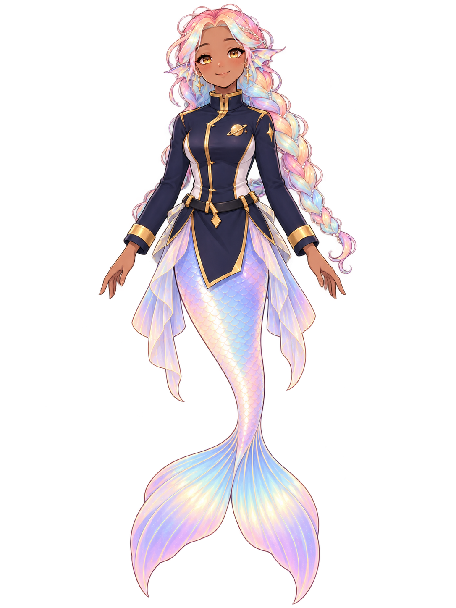

Today
What is coming in to you
2 things need you. Nothing is urgent. 3 things came in while you were away.
01 Needs you 2
- Evening medicine due 20:00 From your own list. It stays here until you mark it done.
- One connection is down 12 min ago The other connection is fine, so nothing is lost. fix it in Systems
02 Arriving 3 today
- RenaiQuiet night. Nothing new needs you.4 min
- Burrito J.The night market returns on Friday.1 h
- MiraThree signals in the same region.3 h
That is all of them — this list ends.
03 On shift
Renai
Watching what comes in.
On shift · last checked 4 min ago

04 When nothing needs you
Nothing needs you. That is a good answer — the crew keeps working either way.
05 Your assistant
Ask anything, any time. Try: “what’s due today?” or “why is the connection down?”
› How this room works
- Connections checked
- 2 · both fine
- Last checked
- 20:39:12
- Where this comes from
- /api/status · /api/attention
- Times come from
- the server clock
- Motion
- reduced — yours to switch on
- Came in today
- 3 · grouped, not one by one
signatureteal · concentric rings · a warm centre